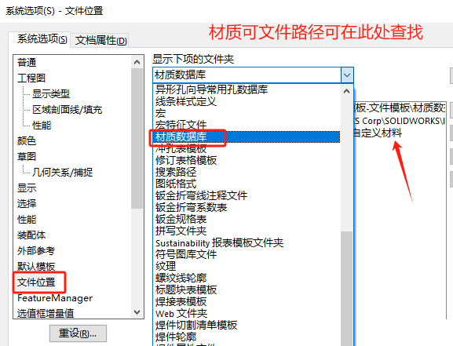
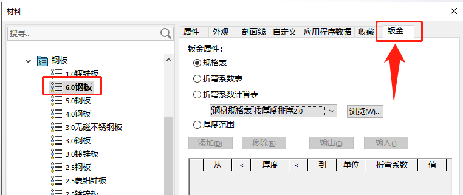
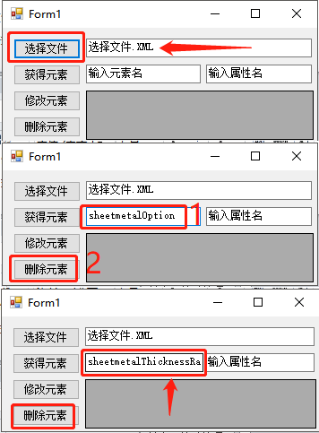
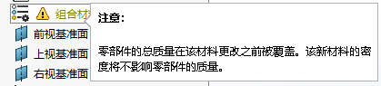
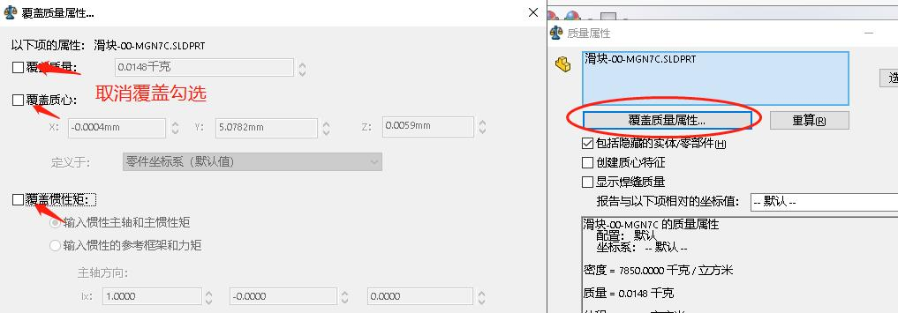
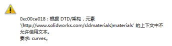
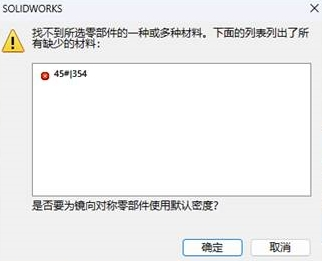
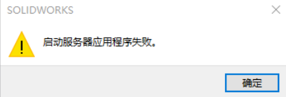

材质库使用问题
xml声明无效
材质库报错 0xc00ce557 xml 声明无效。原因：一般为文件格式错误（或损坏）

方法：删除异常模板
1、检查“文件位置”所在路径下的“自定义材质.sldmat”是否正常；
2、右键.sldmat 文件，用（支持 utf-8 格式）浏览器打开；
3、删除异常的自定义材质.sldmat 文件即可。

材质库文件可以在如下位置进行查找，文件格式是：.sldmat
意外元素
sheetmetalOption 为意外元素：在打开材质库编辑时出现的弹窗。该情况是高低版本的材质库问题，出现在 2019 材质更新的新功能导致 2019 以下的低版本不能使用高版本的材质库.sldmat。

方法1：手动修改
因为材质库是以 XML 文件的格式储存材质信息，那么我们可以找到 2019 更新增加的元素，并将其删除即可（因为这段元素在低版本是没有的，不支持使用的）
补充说明：2019 后材质库更新了”钣金属性”可以对材质进行钣金规格的预定义，在使用该材质时就默认了使用改材质的钣金规格
通常情况是建议找到旧的版本材质库还原替换新版本使用；这是因为手动删除这些元素需要耗费挺多时间。

方法2：批量修改
另一种方法是借助 XML 编辑工具修改。
2-1【选择文件】选择有问题的材质库文件.sldmat
2-2 输入”sheetmetalOption”，选择【删除元素】
2-3 你还需要删除”sheetmetalThicknessRange”元素
2-4 删除后，再用 SW 打开材质库编辑，检查是否还出现问题弹窗。
材料无法修改
零部件的总质量在该材料更改之前被费盖。该新材料的密度将不影要部件的居量。
方法：取消属性覆盖
是因为 stp 标准件导入时，自带的质量信息设置覆盖了。在如下位置取消覆盖质量即可：
在零件工具栏界面【评估】-【质量属性】-【覆盖质量属性】取消勾选覆盖
无效字符
0xc00ce508:文本内容中发现无效字符
![image-20240731173203779](材质库使用问题/image-20240731173203779.png”>
sldmat材质库文件是以xml文件格式进行存储，因此错误的xml格式，会影响文件的准确性。
不允许使用文本
0xc00ce018:根据 DTD/架构，元索”http://www,solidworks.comsldmaterialsjmaterials'的上下文中不允许使用文本，要求: curves。
方法：
查看材质设置的路径下，材质库文件的命名及打开后内容是否正常。
找不到材料
装配体完全镜像零件时出现，找不到所选零部件的一种或多种材料。下面的列表列出了所有缺少的材料：
是否要为镜像对称零部件使用默认密度？
应用程序失败
启动服务器应用程序失败
A1：换普通的（非自定义的材质）会报错吗？
A2：如果普通材质正常，那看看你电脑的office excel程序应该正常吗？或者修复安装后试试？
